1Predicting Open-Market
UA&P · BS Data Science · June 2026
Predicting Open-Market
Residential Property Values
in Metro Cebu
Using Machine Learning and Geospatial Features
Chris Dominic Estreba
BS Data Science Capstone
BS Data Science Capstone
2
[ photo: a Cebu family / a home ]
Everyone needs a place to live.
3
[ photo: Cebu homes / skyline ]
A home is the biggest purchase most families ever make.
4
[ photo: a property listing ]
You find one. ₱6.5M.
Is that fair?
5
[ photo: a real-estate broker ]
Ask a broker — you get a number.
6
[ photo: an appraiser at work ]
Ask an appraiser — you get a different one.
7
None of them agree. And none of them says why.
8
[ photo: a 'For Sale' sign ]
Now you're the seller. What is it worth?
9
[ photo: an empty house / keys ]
Too high, it sits for months. Too low, you leave money behind.
10
[ photo: one house, five question marks (buyer · seller · broker · bank · LGU) ]
Everyone guesses — from a different corner.
11
[ photo: a tax / zonal schedule ]
BIR zonal values — built for taxation, not live market prices. And not always updated.
BIR, n.d.; Otsuka et al., 2023
12
[ photo: a bank facade ]
Bank appraisals — tied to lending and collateral risk. A different question than market value.
13
[ photo: a property listings website ]
Online listings — asking prices, not verified sales. Full of seller strategy and noise.
14
Each one is useful. But they answer different questions — and they don't line up.
The references exist. Nothing connects them.
▶ second line animates in on click
15
02
The Market
16
7.3%
Cebu's economy grew in 2024.
- Among the fastest-growing provinces in the country.
- Driven by IT-BPM and call-center expansion.
- And a strong post-pandemic rebound in tourism.
PSA Cebu, 2025
17
11.5%
And home prices followed in 2025.
- Metro Cebu's growth — the highest rate outside Metro Manila.
- From the BSP residential property price index (RREPI).
- Prices moving faster than benchmarks and incomes can adjust.
BSP, 2025
18
[ photo: CBRT / Cebu–Cordova Expressway / SRP ]
New infrastructure keeps redrawing what counts as ‘near’.
19
03
The Question
20
The business problem
No defensible, market-facing price reference for Metro Cebu homes.
21
The data problem
Turn a property — and where it sits — into a defensible price per square meter.
- Property-level data at scale, drawn from online listings.
- Location turned into measurable features — distances, accessibility, neighborhood price.
- A model that generalizes honestly, and explains its reasoning.
22
Objectives
- Predictive — estimate open-market price per square meter across Metro Cebu.
- Prescriptive — show where those estimates diverge from official benchmarks.
23
Research Questions
- 1 What value drivers influence price?
- 2 Which model deploys best?
- 3 Do geospatial features help?
- 4 How large is the BIR gap?
24
The solution
A stratified, explainable ML model — delivered as a prototype for triangulation.
25
Roadmap — CRISP-DM
Business→Data→Prep→Modeling→Evaluation→Deployment
26
04
The Field
27
Two traditions
- Hedonic regression — interpretable, classic.
- Machine learning — flexible, higher accuracy.
Rosen, 1974; Breiman, 2001
28
What drives price in the literature
- Structural
- Economic / benchmark
- Geospatial / accessibility
- Amenity / point-of-interest
29
International evidence
- Tree models tend to outperform linear models on tabular property data.
- But small samples demand caution.
Grinsztajn et al., 2022; Tanamal et al., 2023
30
Philippine & Cebu evidence
- ML work is mostly Manila / Pangasinan-centric.
- Agosto (2020) is the only Cebu study — transport accessibility is the primary driver.
Viray, 2023; Ramolete et al., 2023; Agosto, 2020
31
The gap
Nothing property-level, geospatial, and explainable — for Metro Cebu.
32
Our bridge
This study builds exactly that.
- Property-level — every listing geocoded across the six LGUs.
- Open-market — aligned to the IVS Market Value basis.
- Geospatial and explainable — with SHAP behind every prediction.
33
Why open-market listings?
The closest available proxy to IVS Market Value.
Arm's-length asking evidence — the basis a willing buyer and seller actually meet on.
IVSC, 2025
34
Why geospatial features?
Location is price — so we construct the location signal, not ingest it.
35
05
The Data
36
Collection funnel
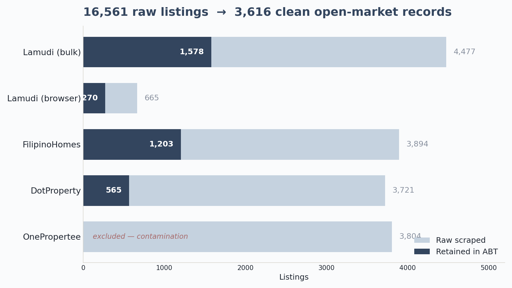
- 16,561 listings scraped — only 3,616 survived.
- Geocoding, the six-LGU and residential filters, a price-per-sqm sanity band, and de-duplication did the cutting.
- OnePropertee was dropped entirely — city-centroid geocoding and mis-extracted prices.
37
Study area
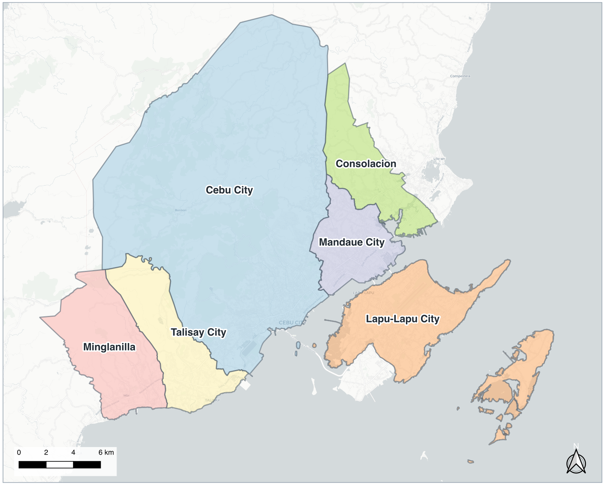
The six LGUs in scope.
38
Where the listings sit
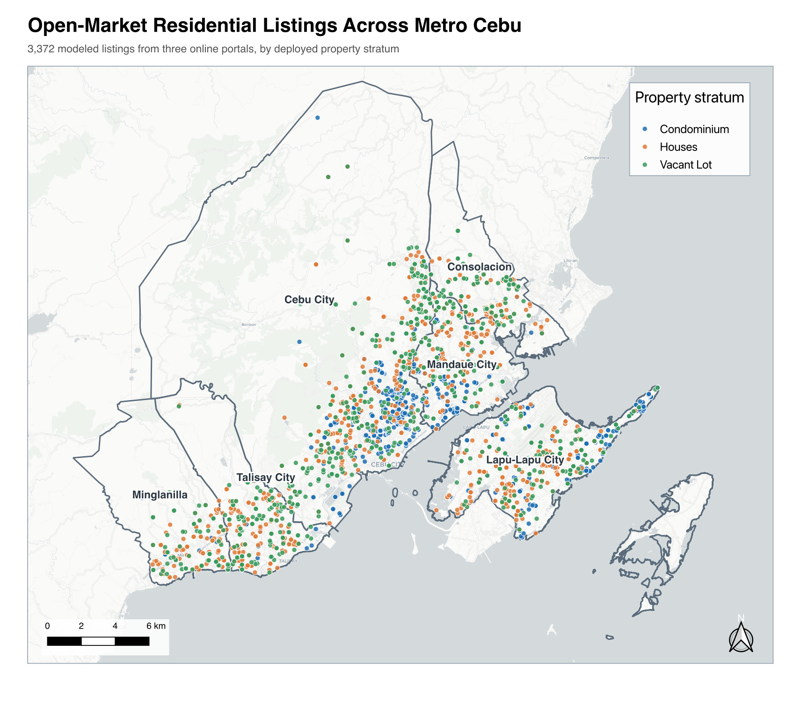
Across the six LGUs.
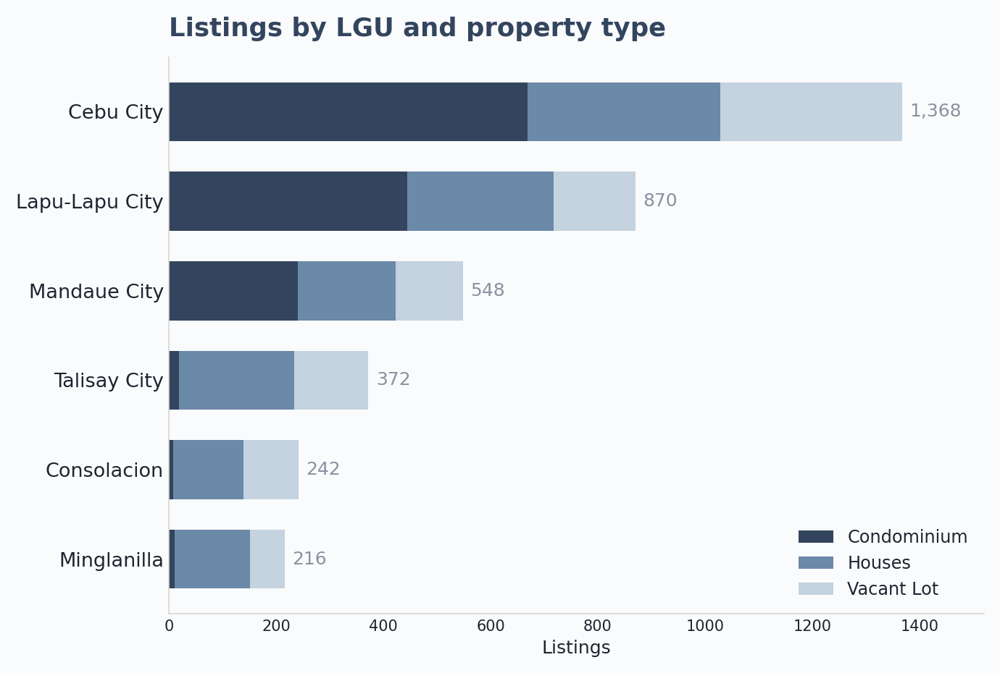
Concentrated in Cebu City and the island; thin in the south.
39
One row of the data
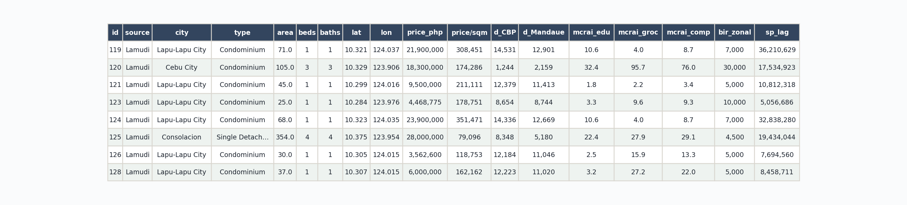
18 of 51 columns — structural, location, distances, MCRAI, benchmarks.
40
Engineered location — CBD distance
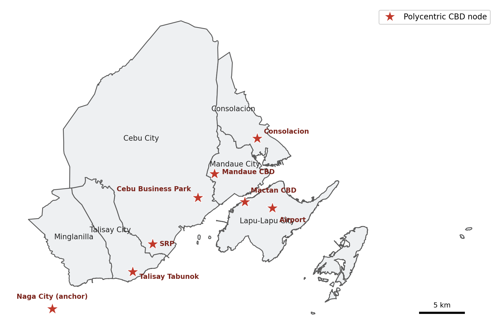
Shortest-path road distance to 8 polycentric nodes.
Giuliano & Small, 1991; McMillen, 2003; JICA, 2015; Boeing, 2017
41
MCRAI — what it is
Metro Cebu Residential Accessibility Index (MCRAI)
MCRAIic = Σj∈c 1 / max(dij, 0.5)β (β = 2)
Nearer amenities count more — accessibility decays with the square of road-distance.
Hansen, 1959
42
MCRAI — how it's built
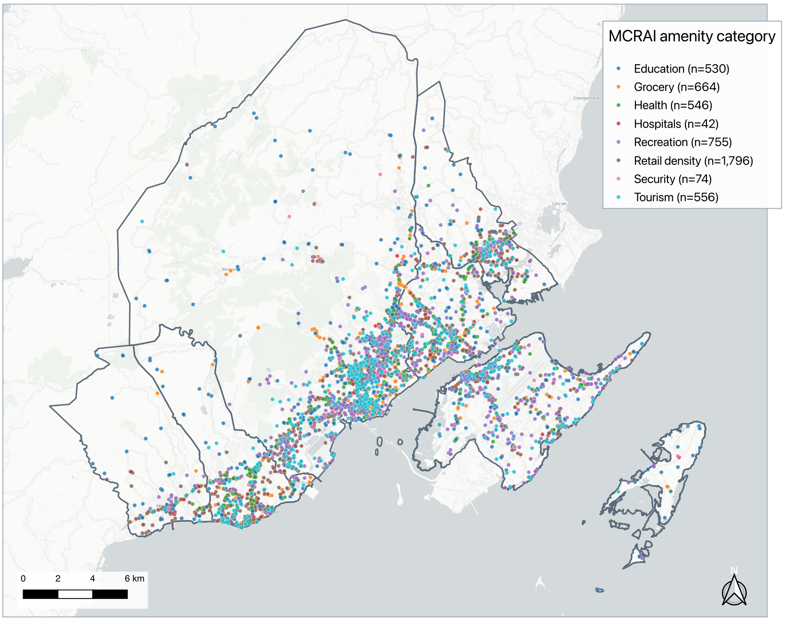
Eight amenity categories, each with its own radius. The composite keeps only positive-signal categories.
43
MCRAI — how one property scores
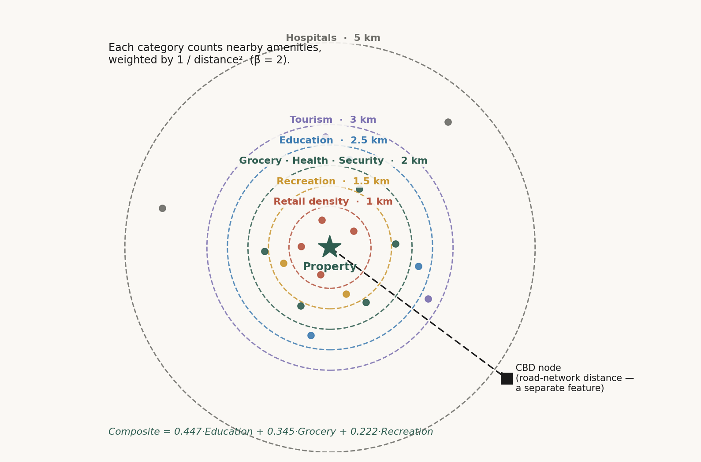
- Each category has its own catchment radius (1–5 km).
- Nearer amenities count more — inverse-square decay (β = 2).
- Transport enters separately, as road-network distance.
Hansen, 1959
44
Engineered location — spatial lag
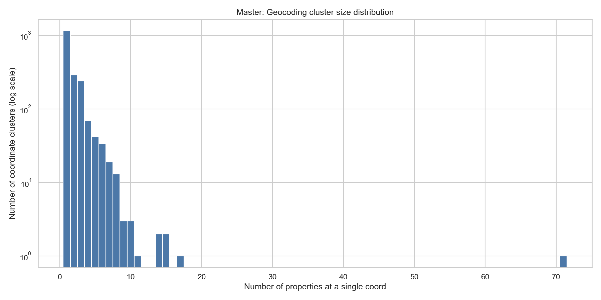
Mean price of nearby same-type listings within 500 m.
Tobler, 1970
45
Price per square meter is skewed
- Price per square meter is right-skewed — a few premium units stretch the tail.
- Modeled in log: it tames the skew but keeps a per-unit meaning.
- Predictions are back-transformed for the price surface.
46
Price varies across the map
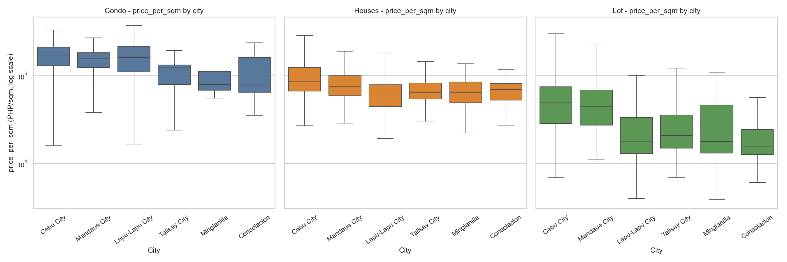
- Premium signal sits in the core and island: Cebu City ~₱113,600/sqm, Mandaue ~₱96,100, Lapu-Lapu ~₱92,100.
- Talisay, Minglanilla, Consolacion form a lower band (~₱47–57k).
- Location can't be assumed uniform — it has to be modeled.
47
Do we trust the features?
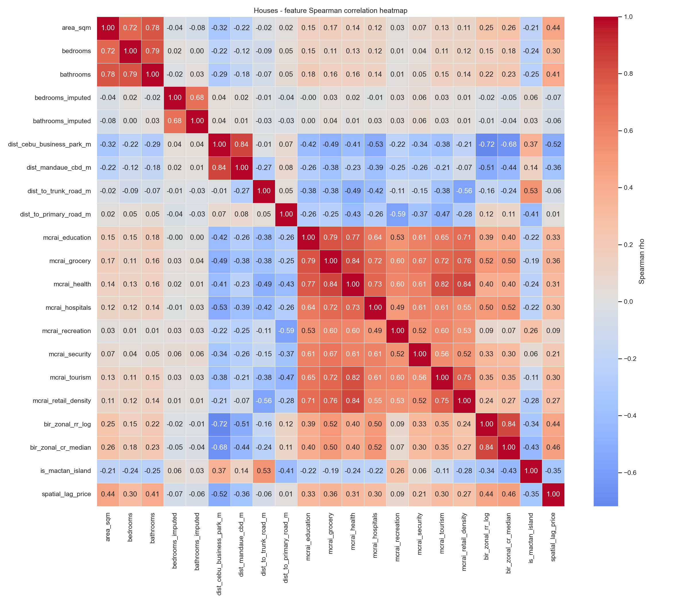
- Several CBD-distance features move together — the southern corridor is geographically nested.
- A flag for the linear baseline, not the trees: OLS trimmed the collinear terms (confirmed with VIF).
- Random Forest tolerates correlated predictors, so the meaningful nodes stayed.
48
06
Groundwork
49
The finding that changed everything
- The condo median runs ≈ 5.8× the vacant-lot median.
- Built area vs land-only are different price logics.
- A single pooled model would blur them — so we stratify by type.
50
Cleaning, honestly
Cleaning kept every decision visible.
- Imputed values were flagged, never silently filled.
- Structurally-absent fields (beds/baths for lots) left blank, not faked.
- Hard duplicates dropped; a price-per-sqm sanity band applied.
51
A data-integrity story
One feature was quietly hijacking the target.
- A scale-selector feature dominated the SHAP rankings.
- The target had come to mean two different things across scrape batches.
- Tracing and fixing it is why the final metrics can be trusted.
52
07
The Build
53
One model isn't enough
A single model would treat condos, houses, and lots as one market — and they differ 5.8×.
54
So we built three
- Condominium — 1,300
- Houses — 1,223
- Vacant Lot — 849
Dröes et al., 2019; Usman et al., 2020
55
Features per stratum
| Feature group | Condo | Houses | Lot |
|---|---|---|---|
| Structural — area | ✓ | ✓ | ✓ |
| Bedrooms / bathrooms | ✓ | ✓ | — |
| CBD distances (8 nodes) | ✓ | ✓ | ✓ |
| MCRAI composite | ✓ | ✓ | — |
| MCRAI individual categories | — | — | ✓ (6) |
| BIR zonal + spatial lag | ✓ | ✓ | ✓ |
| Property-type dummies | — | ✓ | — |
| Total features | 21 | 24 | 22 |
56
The model lineup
- OLS — interpretable hedonic baseline.
- Random Forest & XGBoost — capture non-linear, interacting effects.
- SHAP — explains every prediction, feature by feature.
Rosen, 1974; Breiman, 2001; Chen & Guestrin, 2016; Lundberg & Lee, 2017
57
Honest evaluation
GroupKFold by location — the honest test.
- Listings are grouped by coordinate cluster.
- The same spot never appears in both train and test.
- Stricter than a random 80/20 split — it blocks neighborhood memorization.
58
Random Forest deployed (RQ2)
- Tree models beat OLS in every stratum.
- RF edged XGBoost (19.3 vs 19.8 / 22.7 vs 23.6 / 38.4 vs 40.2 MdAPE).
- Deployed for robustness on small samples and simplicity.
59
08
The Appraisal
60
Headline accuracy
| Property type | Typical error (MdAPE) | Within 20% (PE20) |
|---|---|---|
| Condominium | 19.3% | 51% |
| Houses | 22.7% | 44% |
| Vacant Lot | 38.4% | 26% |
61
What that means
- MdAPE — half of estimates fall within this error.
- PE20 — the share landing within 20% (the practical hit-rate).
- Reported with MAPE, COD, PRD — but not claiming IAAO compliance.
62
Do geospatial features help? (RQ3)
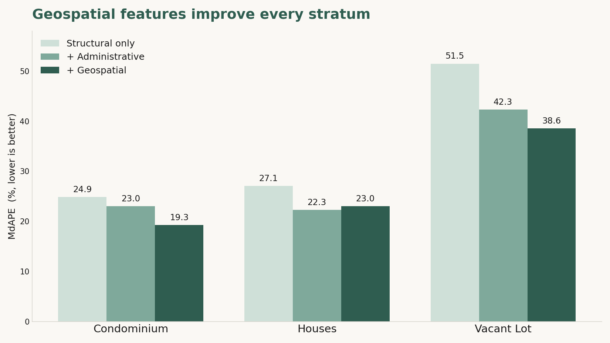
- Geospatial features improve every stratum over structural-only.
- Biggest lift where benchmarks are weakest: vacant lots (+13 pts) and condos (+5.7).
- For houses, city + BIR zonal already capture most of the location signal.
63
What drives price — condominiums (RQ1)
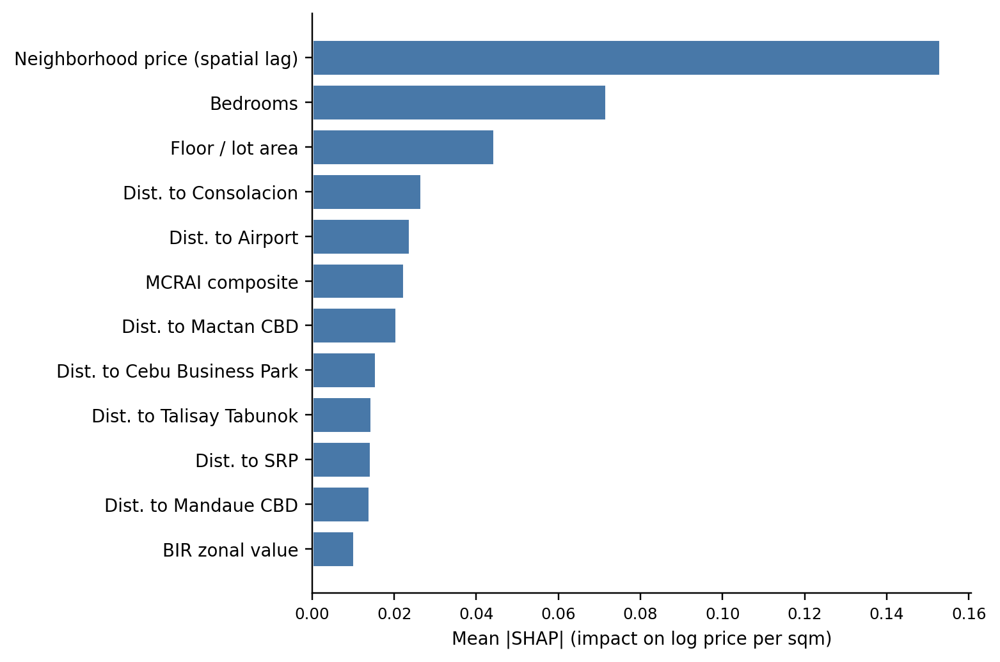
- Neighborhood price level (spatial lag) leads — condos track their block.
- Weight spreads across several nodes — Consolacion, airport, Mactan, CBP.
- The signature of a multi-node, polycentric market.
64
What drives price — houses (RQ1)
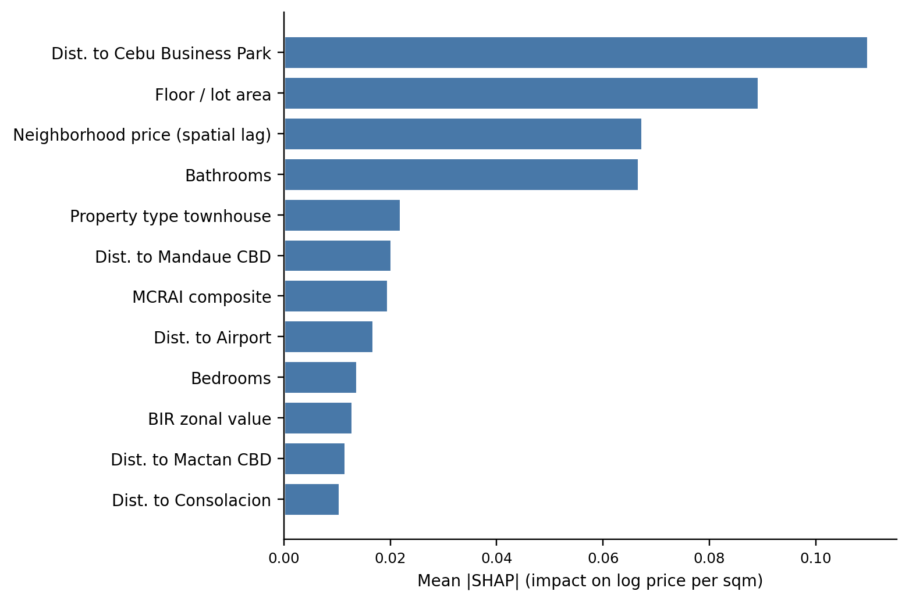
- Distance to Cebu Business Park is the single strongest driver.
- Classic bid-rent: detached-house value falls with distance from the core.
- Amenities enter only as the bundled MCRAI composite.
65
What drives price — vacant lots (RQ1)
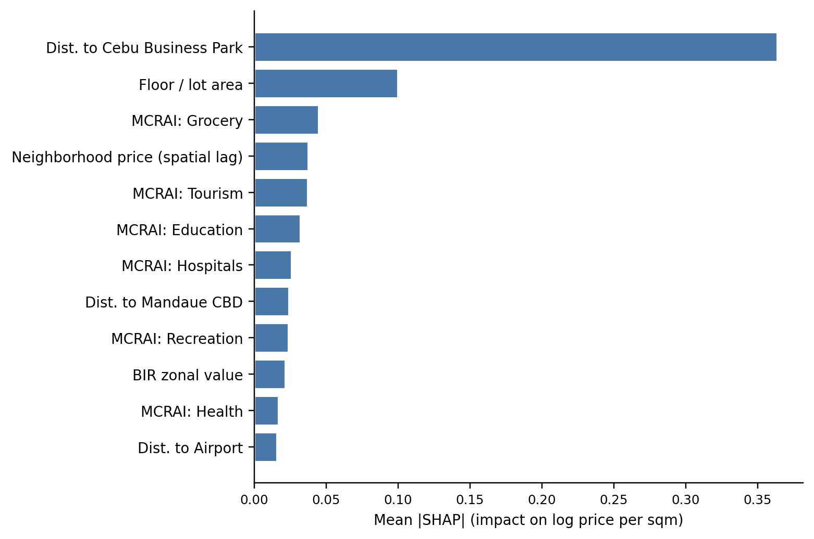
- Distance to Cebu Business Park leads — the steepest bid-rent gradient of the three.
- Individual amenities are the second-largest driver — bare land responds to specific nearby access.
- Still the weakest stratum: unrecorded parcel attributes (frontage, zoning) cap accuracy.
66
The valuation gap (RQ4)
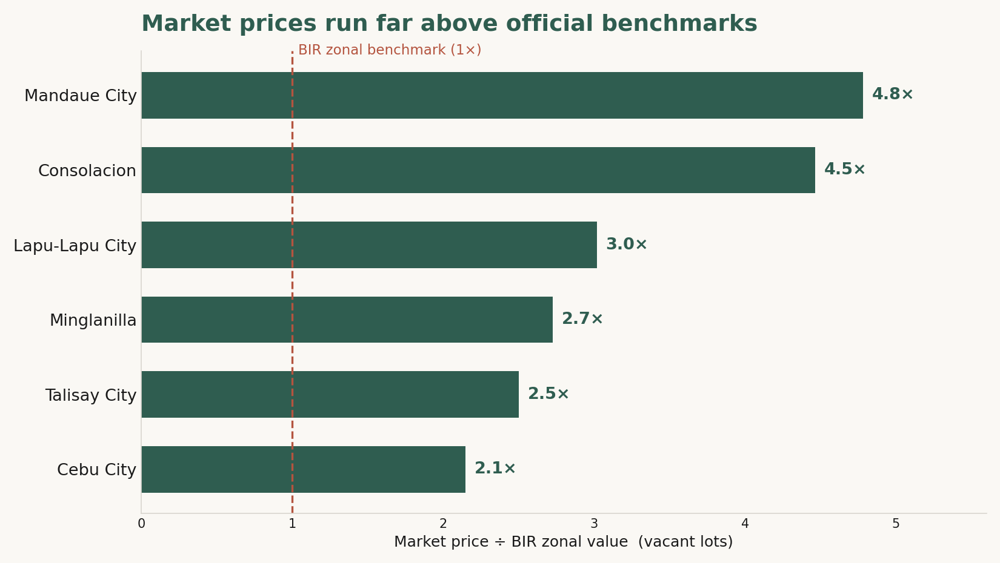
- Market prices run ~3× the BIR zonal benchmark for vacant lots.
- Systematic, not noise — listings beat BIR in nearly every LGU.
- A signal that benchmarks are stale — not a correction factor to apply.
67
Is it good enough?
- A triangulation reference, not a replacement.
- Strongest for condos and houses; indicative for lots.
- It complements professional judgment — never replaces it.
68
09
The Walkthrough
69
Market Map
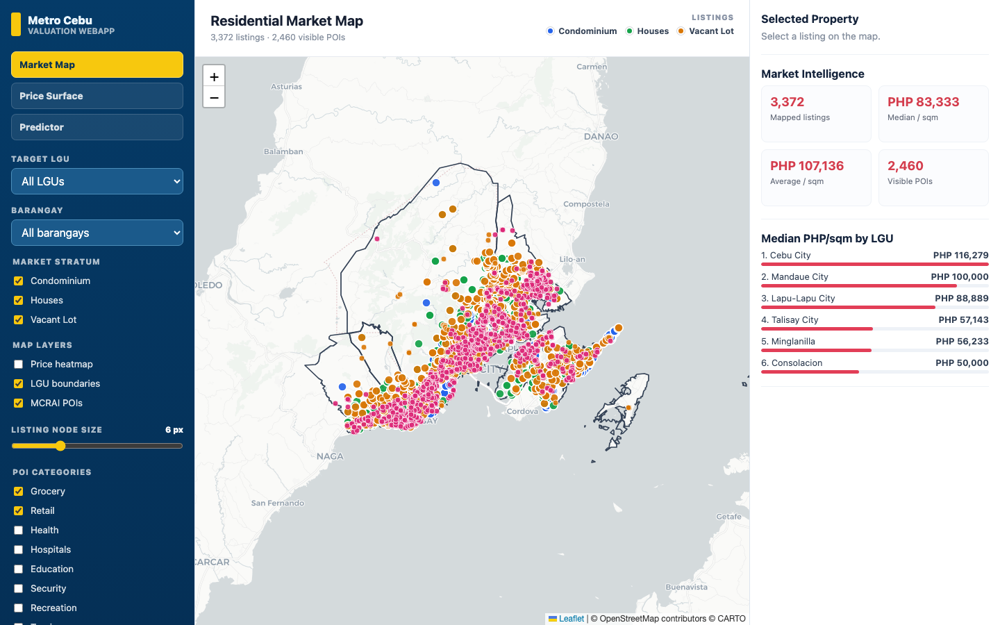
Open-market listings with filters.
70
Price Surface
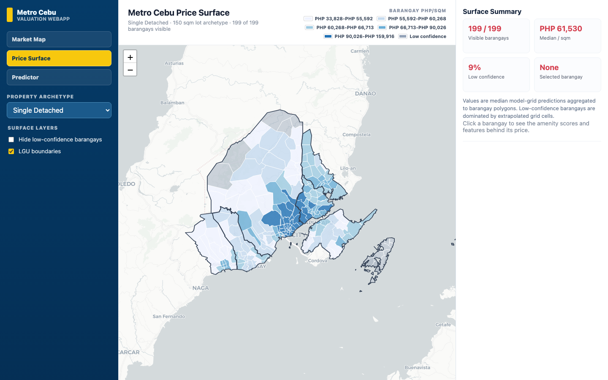
Predicted ₱/sqm by barangay.
71
Property Predictor
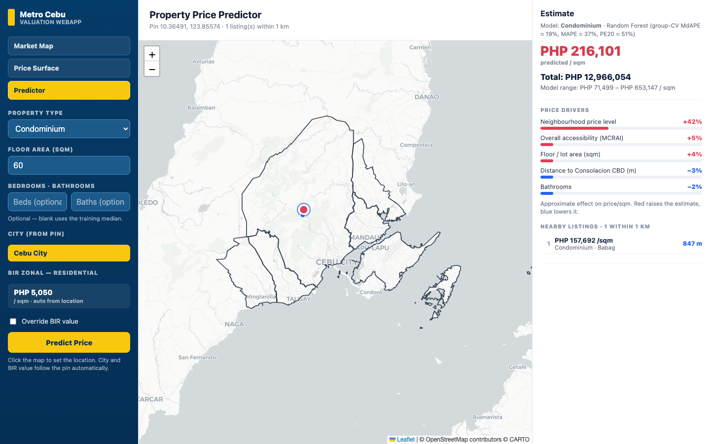
A live estimate — and its SHAP reasoning.
72
10
The Close
73
Answers to the four questions
- RQ1 — Location dominates; drivers differ by type.
- RQ2 — Random Forest deployed.
- RQ3 — Geospatial helps, most where benchmarks are weak.
- RQ4 — The BIR gap is large and systematic.
74
Contribution
- Methodological — per-type modeling, polycentric distances, the two-stage MCRAI, leak-free CV.
- Practical — a reproducible, explainable web prototype.
75
Limitations
- Asking-price ceiling (not deed-of-sale).
- Cross-sectional snapshot.
- Vacant-lot data ceiling.
76
Recommendations — practice & policy
- Use as triangulation, not a final number.
- Recognize secondary subcenters; MCRAI as a template, not a finished index.
77
Recommendations — future research
- Estimate MCRAI parameters from data.
- Enrich parcel attributes; add a time dimension.
Udomsap & Abid, 2020
78
A clearer starting point for the family deciding what a home is worth —
not the last word on it.
79
References
- Agosto, A. (2020). Determinants of Land Values in Cebu City, Philippines.
- Bangko Sentral ng Pilipinas. (2025). Residential Real Estate Price Index (RREPI): Q2 2025 Report.
- Boeing, G. (2017). OSMnx: New methods for acquiring, constructing, analyzing, and visualizing complex street networks.
- Breiman, L. (2001). Random forests.
- Bureau of Internal Revenue. (n.d.). Zonal Values Resources and Schedules.
- Chen, T., & Guestrin, C. (2016). XGBoost: A scalable tree boosting system. ACM SIGKDD.
- Dröes, M. I., Hoesli, M., & Bourassa, S. C. (2019). Heterogeneous households and market segmentation in a hedonic framework. ERES.
- Giuliano, G., & Small, K. A. (1991). Subcenters in the Los Angeles region.
- Grinsztajn, L., Oyallon, E., & Varoquaux, G. (2022). Why do tree-based models still outperform deep learning on typical tabular data? NeurIPS 35.
- Hansen, W. G. (1959). How accessibility shapes land use.
- International Valuation Standards Council. (2025). International Valuation Standards (IVS) 2025.
- Japan International Cooperation Agency & MCDCB. (2015). The Roadmap Study for Sustainable Urban Development in Metro Cebu.
- Lundberg, S. M., & Lee, S.-I. (2017). A unified approach to interpreting model predictions. NeurIPS 30.
- McMillen, D. P. (2003). The return of centralization to Chicago.
- Otsuka, K., Manasan, R. G., & Piza, S. (2023). Local government unit income and real property tax collection in the Philippines. PIDS.
- Philippine Statistics Authority – Central Visayas. (2025). Cebu's economy grows by 7.3 percent in 2024.
- Ramolete, G. I. L., Bramaskara, B., Reyes, D. A., & Heinrich, A. (2023). Utilization of machine learning and government-based indicators for property value prediction in the Philippines. The Philippine Statistician.
- Rosen, S. (1974). Hedonic prices and implicit markets.
- Tanamal, R., Minoque, N., Wiradinata, T., Soekamto, Y., & Ratih, T. (2023). House price prediction model using Random Forest in Surabaya City. TEM Journal.
- Tobler, W. R. (1970). A computer movie simulating urban growth in the Detroit region.
- Udomsap, A., & Abid, M. (2020). Macroeconomic determinants of housing prices.
- Usman, H., Lizam, M., & Adekunle, M. U. (2020). A priori spatial segmentation of commercial property market using hedonic price modelling.
- Viray, F. S. (2023). Residential property price forecasting model for Central Pangasinan, Philippines.
80
Thank you
Chris Dominic Estreba · Questions welcome